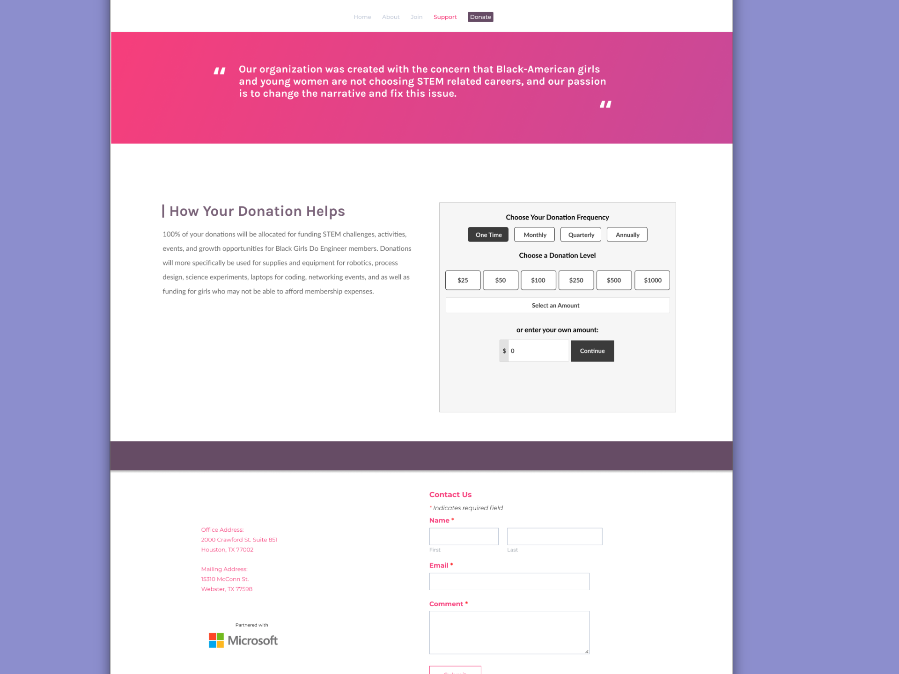
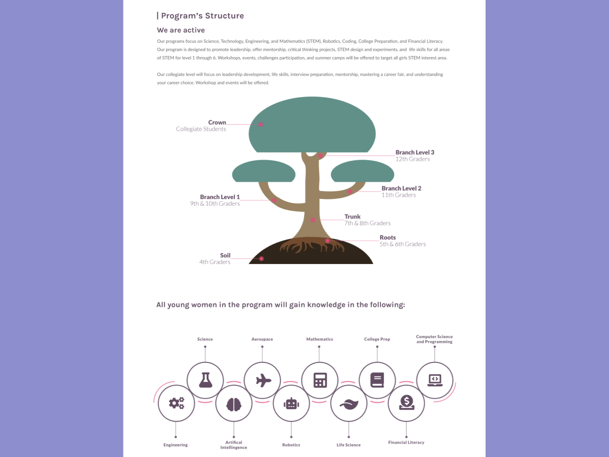
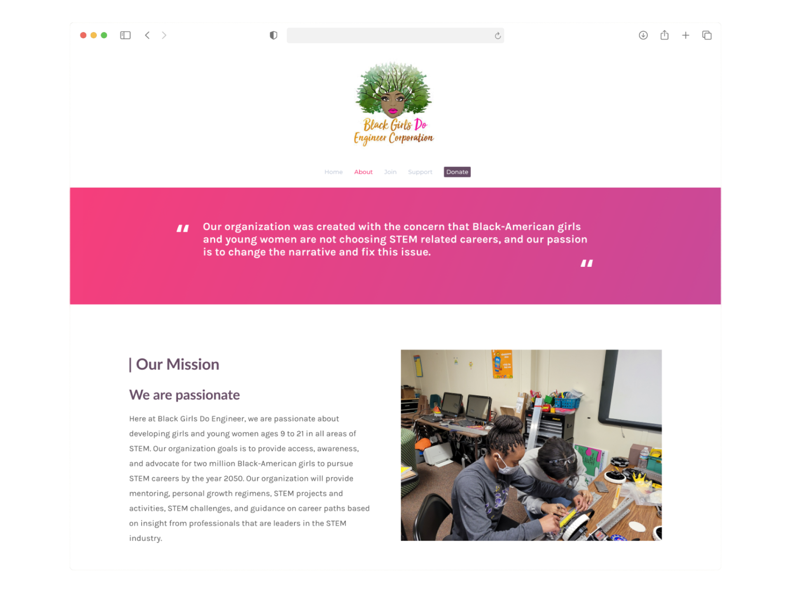

1 Minute Summary
1 Minute Summary
the problem
Black Girls Do Engineer — a nonprofit connecting Black girls with STEM careers — had a website that made it hard to understand the organization, donate, or sign up for programs. Navigation was cluttered, key information was buried, and the donation flow introduced friction that caused users to abandon.
my approach
As one of two volunteer UX designers from benefit.design, I led research through delivery: competitive analysis, cognitive walkthrough, card sorting to rebuild the IA, A/B prototype design, and two rounds of moderated usability testing with six participants across both designs.
The outcome
Navigation condensed from an overloaded flat structure to a focused 5-link hierarchy. Usability testing produced consistent, actionable findings across donation, program, and shop pathways. A maintenance handoff document supported the client in managing the site independently post-launch.


Want the full story?
The sections below dives deeper into research, design decisions, iterations, and learnings.
Overview

My Role
UX Designer
Research, IA, Usability Testing, Visual Design
project type
Redesign
(Pro Bono / Volunteer)
team
1 Other Designer
Founder
duration & status
~3 months
Launched
Organization
black girls do engineer corporation
demo
Growing a nonprofit's reach starts with making sure people can actually use the website
Black Girls Do Engineer Corporation is a 501(c)(3) nonprofit established in June 2019. Their mission is to address the underrepresentation of Black girls and young women in STEM by guiding them toward success through education, mentorship, and community programs. Kara Branch, the organization's founder, engaged benefit.design to provide pro bono UX support — a two-person volunteer team (Destiny Williams and myself) assigned to the website redesign track.
The website's three core goals were clearly defined from the project brief: encourage donating, serve as a source of information about the organization, and support program enrollment. The problem was that none of those goals were being served effectively by the existing experience.
Why this work mattered
As a small nonprofit dependent on community support and donations, every point of friction on the website was a direct cost. An unclear organization story meant fewer donors. A confusing enrollment flow meant fewer program participants. And a donation experience with pressure mechanics — a 20-minute timer, pre-selected fees, and status-based messaging — was actively working against the trust the organization needed to build.


Problem
The site had the right goals and the wrong structure to achieve any of them
key usability issues
A cognitive walkthrough of the live site — mapped against all three core goals — surfaced consistent structural failures. Navigation had too many top-level links with no hierarchy. Program content was repeated across pages in a way that confused rather than informed. The donation flow introduced a 20-minute countdown timer, a pre-checked processing fee, and tiered appreciation messages that created a status divide based on donation amount. The sponsor page had one logo and no context. And the enrollment page led with payment before explaining what the program offered.


- Navigation overload - Too many top-level links with no clear hierarchy. Users couldn't quickly locate core sections.
- Hero pushes content below fold - Navigation height combined with the large hero image hid introductory content from first-time visitors.
- Insurance Information - Three separate ways to donate (nav, hero, sticky "Support Us") felt overwhelming and inconsistent.
- Messaging Feature (Your Help Request) - First-time visitors couldn't quickly understand who the organization served or what they'd accomplished.
What the evidence showed
A cognitive walkthrough documented six problem areas across the three site goals. Competitive analysis of peer organizations — Black Girls Who Code, Girls Who Code, Code.org, and others — confirmed that a condensed navigation with dropdown support, a footer for secondary links, and a single prominent CTA were consistent patterns amoung organizations with stronger digital presence. The evidence pointed toward IA restructing as the highest-leverage intervention before any visual work.

what users were struggling with
Users couldn't understand the difference between "Mission" and "Our Program", which lived on separate pages despite covering overlapping content. On the donation page, the 20-minute timer immediately created presssure. The "Support Us" sticky button was interpreted as seeking help rathar than offering it. And on the enrollment page, being asked for payment information before reading what the program offered caused users to hesitate or abandon.
Guardrails
Clear constraints made it possible to design something that could actually ship
Goals for this project
- User: Visitors — potential donors, parents, students, and sponsors — neeeded to quickly understand the organization's mission, find ways to donate or get involved, and trust their contributions would be used well.
- Business:The founder and BGDE needed a site that could grow with the organization: easier to maintain, clearer in communicating impact, and better at converting site visits into donations and program enrollments.
Approach
Research came first, design came second — and testing shaped everything in between
Audit the existing experience before touching anything
A cognitive walkthrough of the live site mapped pain points across all three core goals: donating, finding information, and enrolling. Rather than starting with visual solutions, this grounded the team in what was actually broken — and produced a prioritized list of issues to design agaisnt. A competitive anaylsis of eight peer organizations confirmed patterns to adopt and pitfalls to avoid.
Redefine the information architecture through card sorting
Two rounds of card sorting with users established a new navigation structure that reflected how visitors actually think about the site's content — not how the organization categoried it internally. The results: a 5-link primary navigation (Home, About, Join, Donate, Shop) with a footer housing secondary pages. This condensed the original 10+ link flat structure into something first-time visitors could navigate without hunting.
Design the test two competing approaches (A/B)
Two mid-fidelity prototypes — Design A and Design B — were tested simultaneously with six participants. Each took a different structural approach to the same content: Design A used a more traditional page-per-section pattern; Design B consolidated information and leaned into interactive components (accordions, infographic trees) to handle content density. Usability sessions were moderated, recorded, and documented per participant using a structured six-task protocol.
Synthesize findings into a refined final design
Post-testing, insights were complied across all participants and categorized into additions, removal, and modifications. Shared themes — more context around donations and sponsorships, clearer program hierarchy, stronger CTAs, a more visible shop — drove the final design decisions. A maintenance handoff document was produced alongside the final deliverables to support the client in managing the live site independently.

Results
Six participants Consistent themes. Clear direction.
Across both designs, users struggled to understand what donations would be used for without context. Information about fund allocation was either below the donation module or absent from secondary entry points entirely.
Indication
Donation context — impact messaging and fund allocation language — needed to appear before or alongside the form, not after it. The "Support Us" label created consistent confusion; "Donate" was universally understood.
Additional patterns across participants
Team member bios were consistently requested — the absence of individual information made the organization feel less personal and harder to trust. A calendar view for events was preferred over a static list, and participants wanted registration close dates visible alongside event information.
In Design B, the "Enroll Now" CTA with per-tier context was praised across multiple sessions. The event calendar's boldness was noted positively. These elements carried forward into the final design recommendation.
Key Patterns
The goal wasn't just to fix the current site, it was to leave the organization with something they could maintain and grow

Navigation Consolidation
Reducing the top-level navigation from a flat, 10+ link structure to five primary links with a supporting footer.
Show more details
Hide more details
Navigation Consolidation
Reducing the top-level navigation from a flat, 10+ link structure to five primary links with a supporting footer.
Show more details Hide more details
Clearing the cognitive load for first-time visitors was the highest-leverage structural change available within the platform constraints. Condensing to Home, About, Join, Donate, and Shop — with Policies, Contact, Sponsors, and Program Accomplishments moving to the footer — gave visitors a clear mental model of the site before they'd clicked anything.
Two rounds of card sorting validated this structure from the user's perspective, not the organization's internal categorization. The sitemap was refined between rounds based on participant confusion patterns.
Tradeoff navigated: Consolidation required decisions about where secondary content lived. Rather than hiding it, it moved to a footer that was still accessible — just not competing for primary attention on every page.

Donation Experience Transparency
Restructuring the donation flow to lead with impact context — removing pressure mechanics and clarifying the entry point language.
Show more details
Hide more details

Donation Experience Transparency
Restructuring the donation flow to lead with impact context — removing pressure mechanics and clarifying the entry point language.
Show more details Hide more detailsThe donation flow was restructured to surface information about how contributions are used before presenting the form. Tiered appreciation messages — which created an implicit status hierarchy based on donation amount — were removed. The "Support Us" sticky button was consolidated into a single navigation-based "Donate" entry point.
Labeling matters. "Support Us" reads as seeking help, not giving it. Consistent use of "Donate" across all entry points removed a source of confusion that cost the organization conversions.
Tradeoff navigated: Some friction-reducing changes — countdown timer, pre-selected processing fee — were platform-constrained and could not be fully resolved. These were documented in the maintenance handoff as known issues for the client to revisit if they migrate platforms

Progressive Program Disclosure
Converting text-heavy, repetitive program pages into a visually organized hierarchy that scales from overview to detail on demand.
Show more details
Hide more details

Progressive Program Disclosure
Converting text-heavy, repetitive program pages into a visually organized hierarchy that scales from overview to detail on demand.
Show more details Hide more detailsDesign B's infographic tree for program structure — showing grade levels and progression at a glance — tested noticeably better than Design A's text-heavy page. Participants could orient themselves immediately, then expand into detail when they were ready. This reduced cognitive load without hiding information.
Combining Mission and Program content into a restructured About section eliminated the confusion of navigating between two pages that felt like they were covering the same thing. Enrollment information was separated into its own clear path with a CTA that told users exactly what they'd get at each level before asking for commitment.
Tradeoff navigated: The infographic approach required copy content from the client that wasn't always available on the volunteer timeline. Placeholder-aware design decisions allowed the layout to hold structural integrity even with incomplete content — documented in the maintenance handoff for Kara to populate.
Demo
Thank you for reading!

Contents
don't be a stranger!
Let's collaborate and create something amazing!